Github Source Code
Dependencies
- RealVNC Viewer - Remote access to Raspberry Pi
- Arduino IDE - Arduino programming interface
- GRBL - Arduino gantry control
- Raspberry Pi Imager - Used to flash the OS to the Raspberry Pi
- Raspberry Pi OS 64-bit - The operating system for the Raspberry Pi
- Universal G-code Sender - Used as configuration software for the gantry
- Stockfish - A Chess engine for computer move determination
- pigpio - Servo control on Raspberry Pi
- Python Chess - Internal chess board and game state tracking
- NumPy - Basic numerical computing
- PySerial - Serial communication between Pi and Arduino
Overview
The software for this project encompasses all aspects of the physical gantry and servo control, as well as the logic for determining computer moves, interpreting human moves, and tracking the game loop state.
The 3 components running essential software are a control laptop, a Raspberry Pi 4B, and an Arduino Uno.
The control laptop runs RealVNC Viewer, allowing remote access to the Pi. This allows execution of the Python files required for game control, and access to Universal G-code Sender, which is essential for gantry configuration.
The Arduino Uno runs GRBL firmware, a gantry control firmware commonly used in hobby CNC applications. This firmware has built-in Core-XY gantry support, meaning it is very simple to set up the firmware for our use case. The firmware accepts G-code commands over serial, which are sent from the Pi in our implementation.
Finally, the Raspberry Pi runs our custom board control software, handling game state tracking, path planning and movement, and overall game loop control. The architecture for this software is explained in more detail below.
Custom Software Architecture
The overall Python board control is broken into 3 stages:
- Internal board tracking, display, computer move and path planning, G-code generation for computer moves, and board reset functionality.
- Game loop control functions using the tools from stage 1. Control a computer vs. computer, human vs. human, or computer vs. human game with the option to reset the board and play another round after the current game has concluded.
- Primary game execution.
Stage 1 is contained within 2 classes: BoardItem and PremadeGameMode. BoardItem is for any standard game mode with live move generation, while PremadeGameMode provides the foundation for a pre-determined list of moves, highlighting all of the edge-case capabilities of our board. Stage 1 does not account for any subprocesses or physical gantry control. It is purely the foundation for planning what moves the board will make and generating the appropriate G-code.
Stage 2 uses the classes from stage 1, with the addition of servo and subprocess control, to execute moves on the physical gantry. Stage 2 contains many functions related to controlling board movement. Additionally, the main game loop function is created to execute an entire game with the desired game mode. This stage also implements the option to have the board reset itself and play another round.
Stage 3 executes the actual game loop, tracking, generating, and executing moves on the board appropriately according to the game mode selected.
These 3 stages are broken into the files board_item.py, game_loop.py, and main.py.
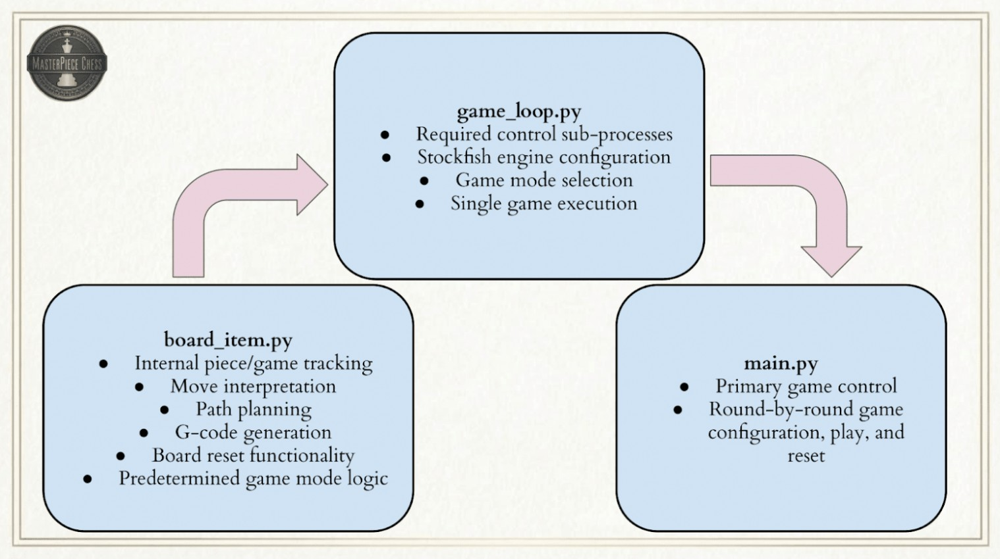Board Representations
Our physical board is a 10x12 grid of squares, rather than the standard 8x8 for a regular chess board. This larger size allows for dedicated capture and promotion piece spaces, making the expected behavior of board moves more obvious, but game state tracking slightly more complex. Additionally, pieces are allowed to move along the edges of squares to pass between other pieces, meaning that additional representations are needed to properly account for this behavior. Overall, our internal game tracking contains 3 board representations.
- Regular 8x8 Game Board - For use with the Python Chess library. The library we use for tracking the actual game and the Stockfish engine for move generation obviously only accept an actual game board as input. This board is updated through Universal Chess Interface (UCI) moves and does not account for the placement of captured pieces, as they simply disappear from the 8x8 when captured. 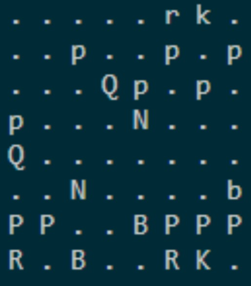
- 10x12 State Board - The 8x8 game board is mapped to the center of this representation, with the capture spaces and promotion columns around it. This representation accounts for the placement of captured and promoted pieces when relevant to a certain move, since pieces can’t magically disappear from a physical board. This representation is not compatible with the chess engine or library, but is essential for tracking all of the physical pieces on the board. The center 8x8 is simply updated whenever a move occurs, and the outer squares are updated as necessary from captures and promotions. 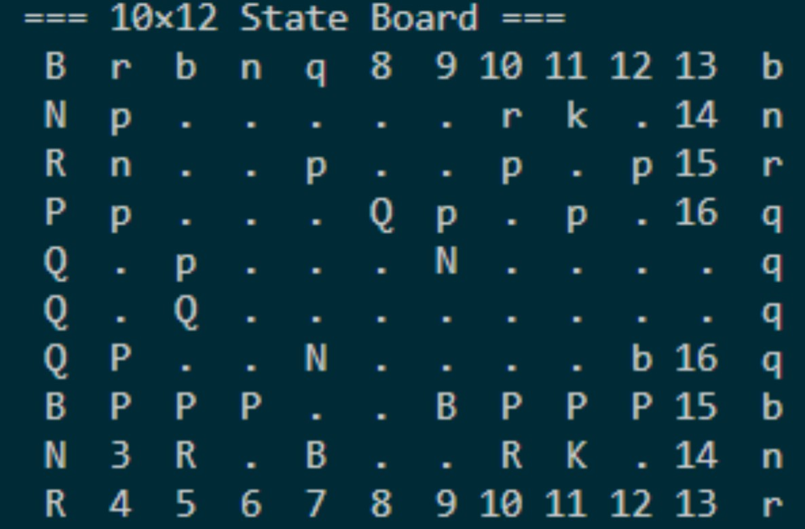
- 19x23 Node Grid - Physical piece movement requires one additional representation in the form of a node grid showing all valid movement options. To allow pieces to move between squares, each square has 9 movement nodes: 1 in each corner, 1 in the middle of each edge, and 1 in the center of the square. Moves are required to start and end in the middle of a square, but can pass through any open nodes to travel between the 2. Diagonal node travel is also permitted under certain conditions. All path planning and G-code generation is based on this representation. This representation is easily created by simply adding an empty node between every state board square, and can be indexed by multiplying a certain state board square’s indices by 2. In this representation, (0,0) is the top left-most node, while south and eastward movements are positive. 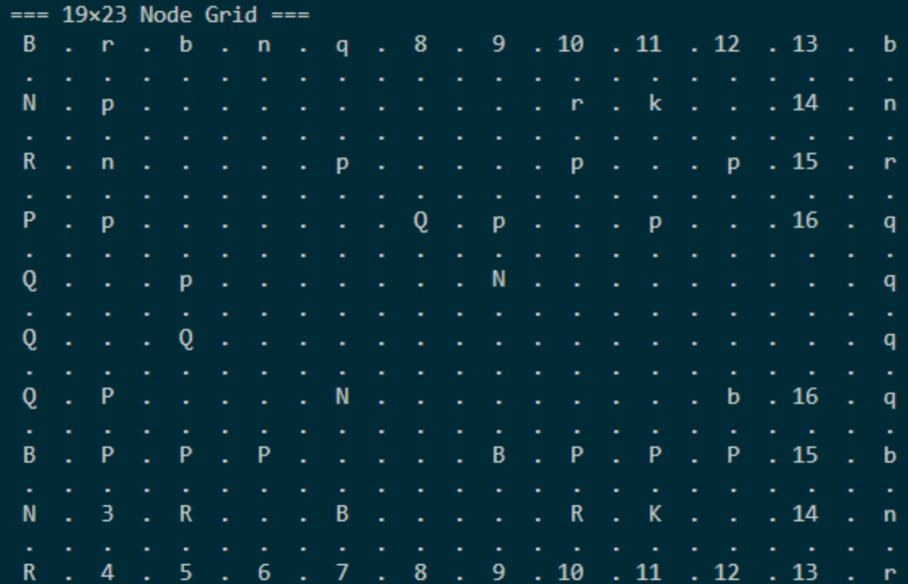
Move Generation & Interpretation
All moves on the board are interpreted with UCI notation, such as ‘e2e4’ or ‘h7h8q’. These represent a starting and ending position on the board for a certain move. The UCI can contain a 5th character specifying what promotion piece to use if a pawn has reached the far end of the board. Special moves like captures, en passant, and castling are implied rather than specifically called out, and thus must be checked for on each move.
- Promotions are recognized any time the UCI contains 5 characters, and the promotion piece is specified by the 5th character. 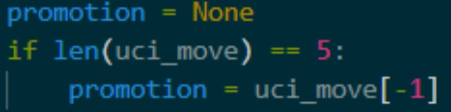
- Captures are recognized whenever the end square contains a piece of the opposite color.
- Castling is recognized any time a king moves more than a single square.
- En passant is recognized any time a pawn moves to a new column while its end square does not contain a piece.
A human-input move is checked for validity in 3 ways to avoid program errors. First, the UCI length is checked. If the input is not 4 or 5 characters, the user is prompted for new input. Second, the UCI move is passed to Python Chess to check if it can be parsed. If the move contains unexpected characters and can not be interpreted by the library, the user is prompted for new input. Finally, if the move can be parsed, it is checked for legality from the list of all possible legal moves. If the move is illegal, the user is prompted for new input.
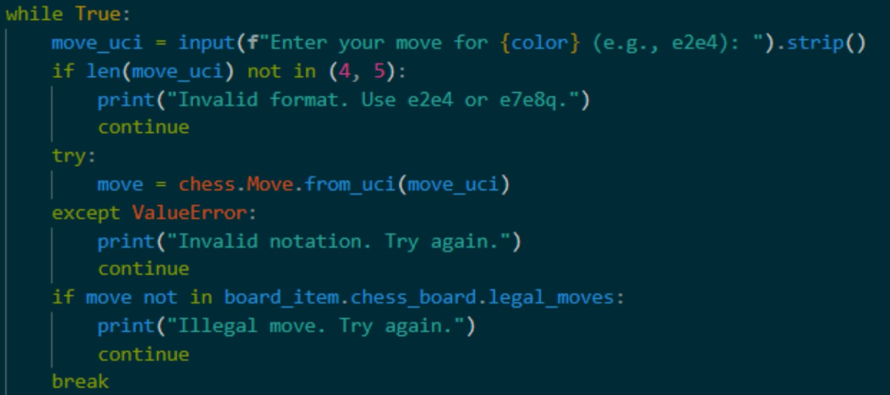Computer moves are chosen by Stockfish, our selected chess engine. Stockfish receives the entire current game state in Forsyth-Edwards Notation (FEN). Stockfish then chooses the next move based on this game state and the configured skill level and returns it in UCI notation.
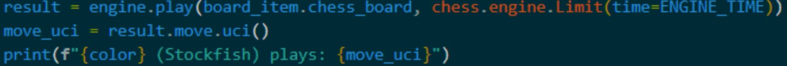When internally executing a move, the 8x8 game board is updated by the Python Chess library normally. The procedure is the same for the 10x12 state board for normal moves, but captures and promotions are slightly more complex. Since the physical captured piece can’t simply disappear from the board, the captured piece is added to the next available capture space in the 10x12, in addition to the capture being executed within the 8x8 game board, meaning the total number of pieces in the state board never changes. For promotions, the pawn and promotion piece effectively switch places on the state board representation. At this stage, no physical gantry movement has actually occurred, but most of the internal tracking has been updated, besides path planning for moves.
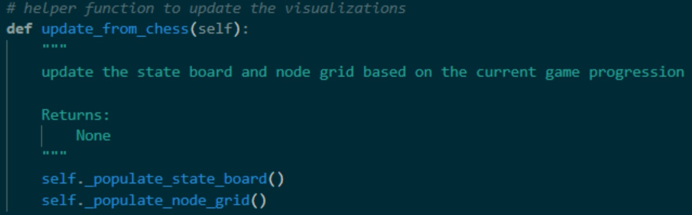A* Path Planning
To execute the moves from the previous step, physical gantry paths must be planned for each step of each move. To this end, we utilize the A* algorithm to guarantee the shortest path for each piece. All path planning is done using the 19x23 node representation to allow pieces to move along the square edges and guarantee that at least 1 viable path always exists. This method is not guaranteed to create realistic moves, but often the most realistic path is the shortest for pieces other than the knight. The algorithm itself considers all the neighboring nodes to the current node as a space to move next, removes any that are occupied or would interfere in some way with the game, and then chooses the lowest cost neighbor based on how much closer it would be to the goal node as the node to move to next, repeating this process until the goal is reached. A specific constraint to the algorithm added for our project is that any diagonal neighbor that would require moving closer than 1 node length away from another piece to reach is blocked. This avoids a sort of ‘corner-cutting’ behavior that can cause interference between pieces.
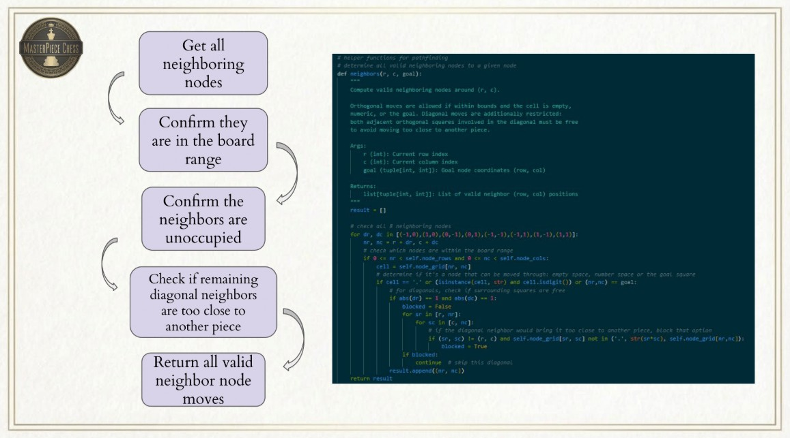 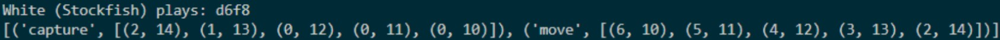 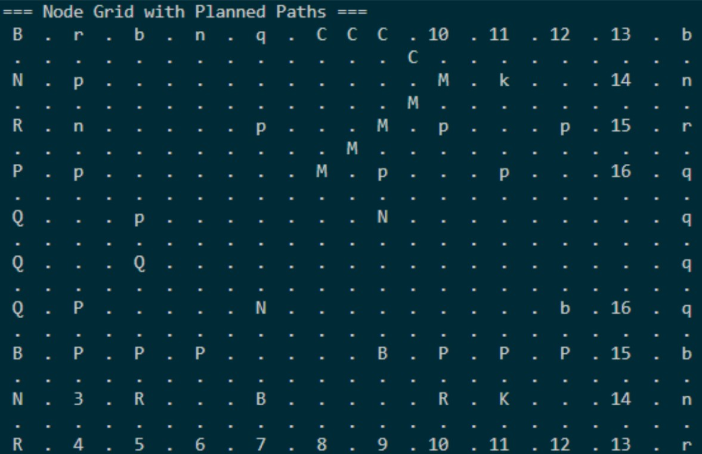Physical Move Order of Operations & Considerations
One of the most complex aspects of the board logic is determining which piece moves in what order for non-standard moves. The path planning for a normal move is quite simple, as the piece only needs to move from the starting square to the end square while avoiding occupied nodes. However, as soon as more than one piece is involved in a move, the order of piece movement becomes critical.
Captures
For any capture, the captured piece is moved first. For a standard capture, this is from the ‘end square’ of the actual UCI move to the next available capture space to open up the ‘end square’ for the capturing piece. Then, the capturing piece can move from the ‘start square’ to the now-empty ‘end square’.
En Passant
En passant captures are slightly more complex, as the captured piece is not located in the ‘end square’ of the UCI. Instead, the captured pawn is located in the same row as the ‘start square’ and the same column as the ‘end square’ of the UCI move. The captured pawn is moved to the next available capture space, and the capturing pawn can then make its diagonal move.
Castling
For castling, the king is moved first according to the UCI. The rook is not noted in any part of the UCI, so all of the rook’s movement is based on its known start position from the corner to the square immediately on the other side of the king. An important note is that the internal tracking only updates according to the entire move, so while the rook is moving, the king’s location is still considered to be its starting position rather than where it is located once the rook starts moving. To combat this, the king’s end position is temporarily added as an occupied node before the rook’s path is created so that the rook does not interfere with it. The board is then fully updated with the full castle end positions at the end of the move.
Promotions
Finally, promotions are the most complex operation. Requiring 3 moves, a promotion begins with the pawn being promoted. The pawn begins one row away from the edge of the board, considered the start square for the UCI. The end square is one space further along the board, but the pawn is not moved to the final row. Instead, the pawn is moved over to the promotion column and placed 1 node horizontally away from the piece being promoted, determined from the 5th UCI character. Again, the pawn’s intermediate location must be temporarily blocked to avoid having the promotion piece move through its node before the internal tracking update. The promotion piece is then moved from its starting position in the promotion square to the end square of the UCI. The final operation is to move the pawn one node over such that it occupies the promotion piece’s starting position. With these 3 operations, the pawn has effectively moved forward one space and been promoted to another piece without ‘removing’ any pieces from the board.
Together, all of these operations encompass all possible moves in chess, meaning that any legal move can be interpreted and executed on the physical board. Our path planning function returns an ordered list of lists of nodes to travel through, with the name of each operation specified. This allows the G-code generation to know when the servo should perform certain actions between operations.
Move G-code Generation
Once a path has been successfully planned, it must be converted into G-code. The G-code generation function takes in the list of lists of nodes to travel through and returns a string of lines of valid G-code to pass to GRBL on the Arduino. Because the physical board nodes are effectively 1 inch apart, the node representation coordinates can be directly converted into G-code without any scaling. Each operation begins with a G0 rapid move to the starting node coordinates. This does not require any feedrate input, as it uses the maximum allowed travel speed as configured by GRBL. After the rapid move, the function appends the line ‘servo_up’. This is obviously not a command that GRBL understands, and we do not send it to the Arduino. Instead, ‘servo_up’ and ‘servo_down’ lines in the G-code trigger the Pi to move the servo to a certain position. After the servo_up command, the function iterates through the specified nodes, adding G1 standard move commands with a feed rate of 150 in/min until the end of the operation is reached. Finally, a servo_down command is appended to release the piece. This process is repeated for all operations in a move and then returned by the function as a string with a single command on each line. Once again, the gantry is not yet executing these commands; the G-code for a certain move is simply created.
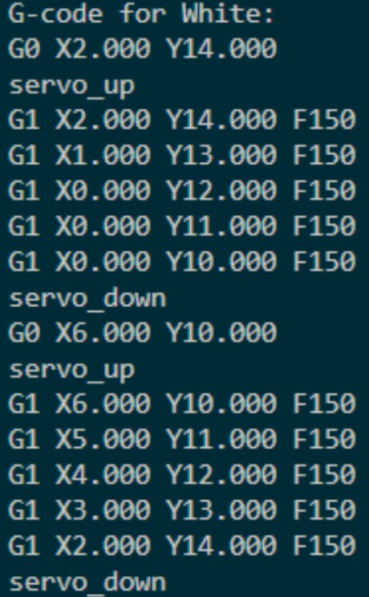Board Reset
This function is similar to the G-code generation step, and effectively returns the same string of commands. However, the previously described G-code generation is based on paths planned for legal chess moves. The board reset moves obviously do not follow any kind of valid notation, and therefore require some different functionality. First, all valid starting nodes for a certain type of piece are specified in a dictionary. Nodes are valid even if they are promotion spaces, as all pieces must be reset to the correct starting spot, and we do not mind which of the 5 queens on the board ends up in which queen space as long as all 5 end up in one of the spaces. Next, we iterate through every piece on the board and check if it is in a valid starting node. Any node that matches is locked such that the piece can not be moved while the board resets. Then, any piece that is located in a valid starting position, but is the wrong piece, is randomly moved to any free space on the board to open up the currently blocked starting positions. The internal tracking is also updated during this time to avoid losing these randomly moved pieces. Once all the starting nodes are available, we iterate through each piece again, skipping locked squares, and planning a direct path from the piece’s current location to one of the open starting nodes for the piece. Once this has been completed for every piece, we use the G-code generation function to plan one massive string of commands and return the string for execution.
PremadeGameMode
All of the functionality up to this point has been based in the BoardItem class. The PremadeGameMode class adds one additional functionality in the form of a game that is not live-generated but can showcase all of the edge-case movement in a single short game. The class contains a list of 28 moves that showcase en passant, castling, and a promotion ending in a checkmate. The board reset can also then show off its ability to reset promotion and capture spaces from tricky starting points. This highlights our board’s functionality in the shortest viable package. The class only contains one function besides the __init__ method, which executes each move from the list to reach checkmate. All of the internal tracking is still completed during this premade game to ensure the board reset function works in this mode.
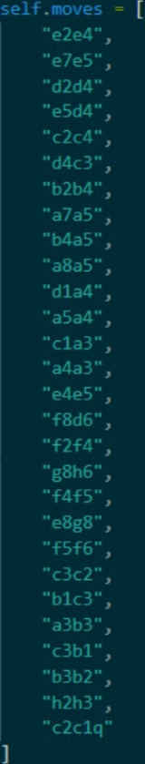Servo & Gantry Control
To support the game loop and execute physical movement, we utilize serial commands and the pigpio library. Pigpio has a dedicated Daemon that runs as a subprocess, enabling smooth servo movement from a Raspberry Pi on the GPIO pins. PWM signals are sent to the Servo to move it to the correct position.

To control the gantry, we send strings containing commands over serial to the Arduino, which then adds the commands to a queue that is executed one line at a time. This process has 2 additional essential features for proper control of the system. Whenever a command is sent to the Arduino, it responds with ‘ok’ once the lines have successfully been added to the queue. This is a useful feature to avoid overburdening the Arduino with commands by waiting to send an additional line until the previous command has been accepted into the queue. The second useful feature is the option to poll GRBL for its status with the ‘?’ command. This returns a string with various information about GRBL’s status, but most usefully, we can check if the response contains ‘Idle’, and wait to execute certain steps until GRBL has become Idle.
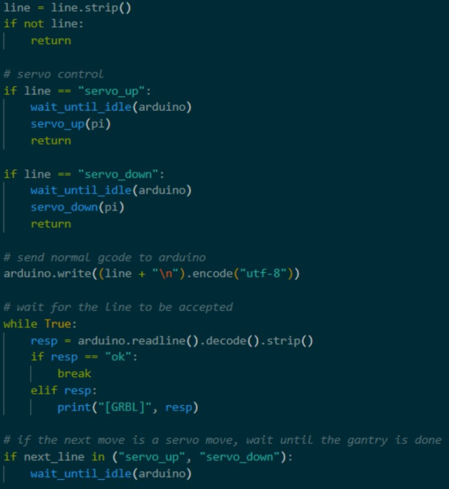One major challenge surrounding this area of gantry control was servo move synchronization. Because the gantry is controlled by GRBL on the Arduino, while the servo is controlled by the Pi, executing servo commands at the correct time becomes very tricky. Originally, we relied on the GRBL ‘ok’ response for timing, assuming that the message was returned after a move was completed rather than just added to the queue. Servo commands were being executed immediately instead of after the correct sequence of moves. To combat this, we updated a few functions to rely on polling GRBL for its status instead. Our G-code execution function that sends lines to the Arduino was updated to also check the next line to be sent to the Arduino. If the next line is a servo command, the function begins polling GRBL for its status and does not execute the servo move until the gantry has become idle. This ensures that each servo move is correctly timed with the sequence preceding it.
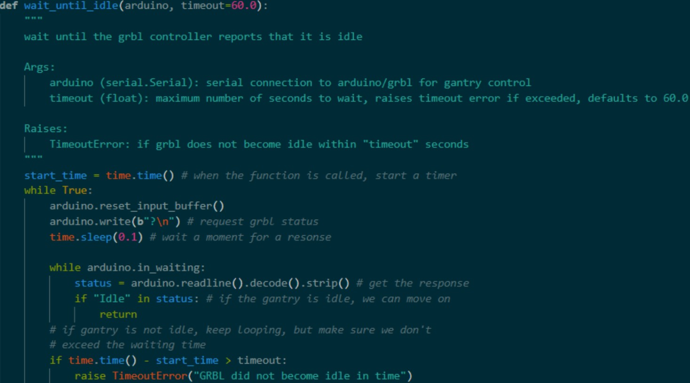Game Loop
To tie it all together, we utilize these classes and control methods to create a game loop function. Using the class methods in combination with Stockfish, user input, servo commands, and a few other background processes, we can receive UCI moves as input, parse the moves, plan the correct path G-code, and execute moves on the physical gantry.
The run_game() function encompasses the process for a single game. It assumes that the pigpio daemon is already running, the pigpio object has already been created for the servo, and serial communication has already been established between the Arduino and Pi. In our implementation, this step is accomplished by another function, init_hardware(). When a game begins, the user is prompted to input several game configuration settings. If the answers are invalid, the user is asked for a new response to avoid errors. The 4 game modes available are:
- Human vs. Computer - In this mode, the human plays against Stockfish and can select which color they’d like and what Stockfish skill level they’d like to play against.
- Computer vs. Computer - In this mode, 2 Stockfish engines play each other. The human can select the desired skill level for both engines.
- Human vs. Human - If, for whatever reason, 2 people are too lazy to move the pieces themselves, the gantry can do it for them! Accepts typed UCI input.
- Pre-determined Game - Primarily for showcasing board functionality, this mode executes a list of 28 pre-determined legal moves, showing en passant, promotions, and castling before reaching checkmate as quickly as possible. Deterministic internal board tracking is still used to allow board reset functionality.
Once the game has been configured, the servo is lowered to avoid moving pieces, and the gantry performs its homing operation. This is done before each game to ensure the gantry doesn’t stray from its expected positioning. The gantry is also configured to accept commands in inches with absolute positioning, since that is the format of our generated G-code. The turn loop then begins, swapping between players, receiving and parsing move input, planning paths and G-code, and executing each move until checkmate is reached. The game result is reported, and the user is prompted about resetting the board and playing another round. If the user doesn’t choose to play another round, the pigpio Daemon is stopped, the pigpio object is closed, the serial connection between Pi and Arduino is closed, and the program is exited.
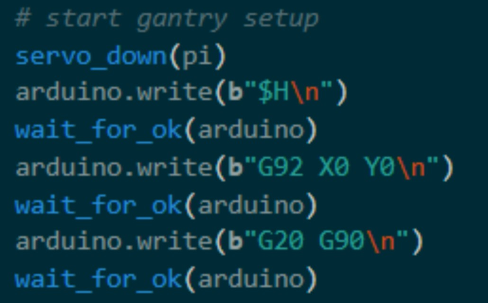 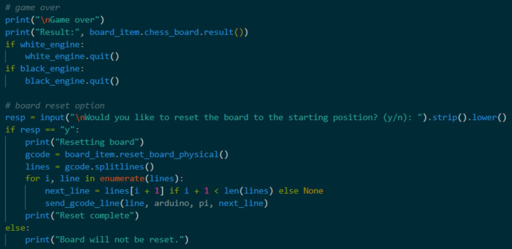Board Sensing
To detect human moves, we read the Hall-effect sensors under each square through MCP23017 I/O expanders on a shared I²C bus (addresses 0x20–0x27). Each expander provides 16 digital inputs (GPIOA/GPIOB), and the Arduino configures all pins as inputs with pull-ups enabled. During an update, the Arduino reads GPIOA and GPIOB once per expander and converts the raw port bytes into a 10×12 occupancy matrix. The mapping from physical squares to specific expander pins is stored as a lookup table (generated from a spreadsheet) and packed into a compact format: (expander index, port A/B, bit 0–7). For each square, the software uses this packed mapping to extract the correct bit from the correct expander port and outputs a 1/0 value indicating whether a magnet (and therefore a piece) is present. Our original vision was for the Arduino to communicate this board state to the Raspberry Pi over serial, which is why the Pi can request a fresh snapshot by sending the keyword “chessatron.” Upon receiving it, the Arduino prints the matrix as CSV for easy parsing.
Address range + magnet polarity
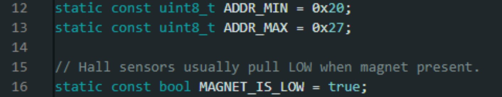The packed mapping explanation + MAP definition
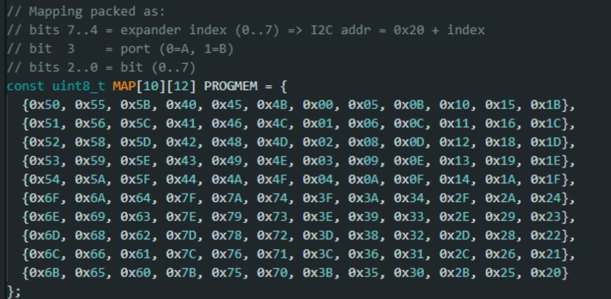Configuring MCP23017 inputs + pull-ups
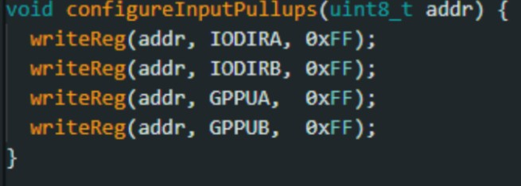Read each expander once
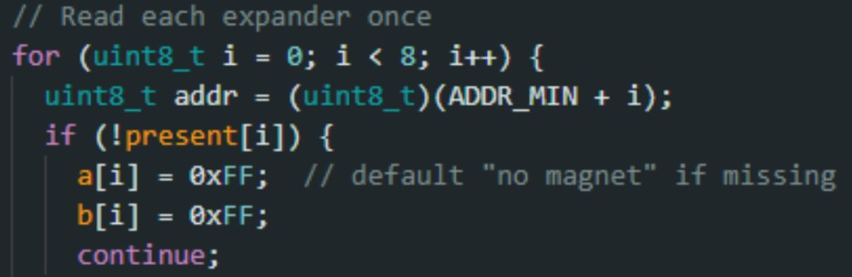Decode mapping → bit → matrix output
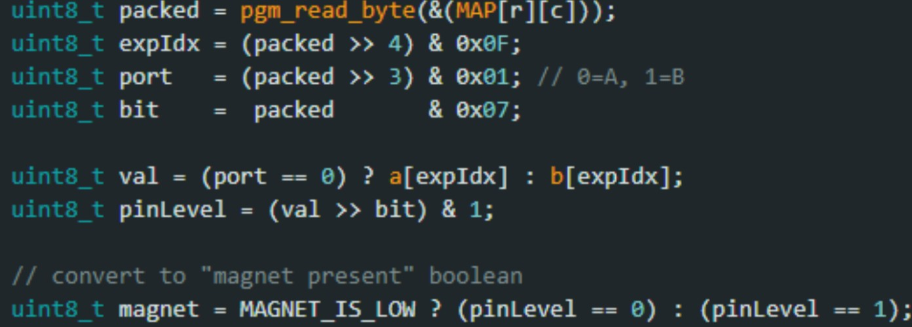Lookup Table For Square To Expander Mapping
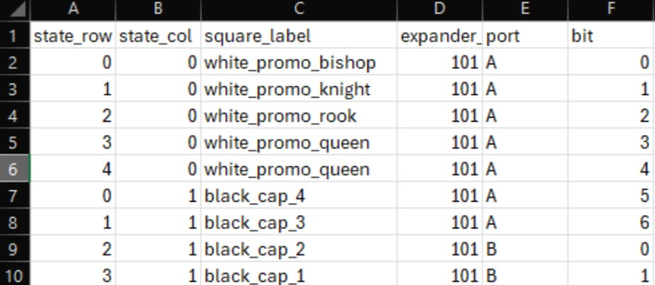This lookup sheet was created after soldering and wiring the boards to make it easier to index each physical square to its corresponding MCP23017 expander/port/bit during software development.